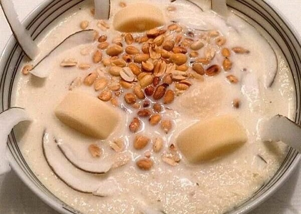

GARI SOAKINGS

Gari soakings is a beloved Ghanaian dish often described as the
"official student cereal" or a "lifesaver" due to its quick preparation
and affordability. It consists of gari (crunchy, fermented cassava flakes)
soaked in water or milk and sweetened to taste
QUICK FACTS ABOUT GARI SOAKINGS
- The "African Cornflakes": Because it is served in a bowl with milk, sugar,
and toppings, it is often humorously compared to Western cereal.
- A "Lifesaver" (Agyenkwa): In Ghana, it is famously nicknamed Agyenkwa
(meaning "lifesaver") because it is a dependable, instant meal for students
in boarding schools or anyone needing a fast, low-cost "quick fix" for hunger.
- The Texture: Gari is naturally "self-raising," meaning it swells and softens
as it absorbs liquid, creating a satisfying and filling texture.
ingredients
- gari
- suger
- milk
- groundnut
- water
STEPS
- Pour about ½ to 1 cup of Gari into a cereal bowl.
- The Soak: Pour in cold water until it covers the gari by about an inch.
If you like it thick, use less water; if you like it watery (the "drinking" style),
add more.
- Add your milk.
- Add sugar to your liking. Stir well until the sugar dissolves
and the gari granules begin to swell slightly
- Add a generous handful of roasted peanuts (groundnuts).
Some people also like to add crackers or biscuits (like Cabin or Malted biscuits)
broken into small pieces.
One warning: Don't wait too long to eat it! Gari continues to absorb water,
so if you leave it sitting for 10 minutes, it will turn into a thick paste rather
than a "cereal."
Home